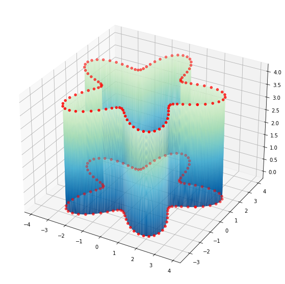
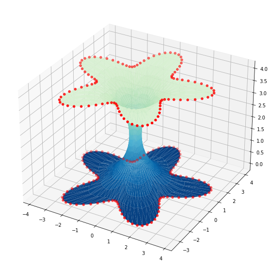

Soap films and minimal surfaces
Contents
Soap films and minimal surfaces¶
import jax
import jax.numpy as jnp
import matplotlib.pyplot as plt
%matplotlib inline
def surface_area(v, triangles):
def triangle_area(triangle):
i, j, k = triangle
return 0.5 * jnp.linalg.norm(jnp.cross(v[j]-v[i], v[k]-v[i]))
return jnp.sum(jax.vmap(triangle_area)(triangles))
def minimize(loss, x, c, step_size, num_steps, cb=lambda i, x: None, cb_every=1000):
"""Constrained minimization by projected gradient descent."""
@jax.jit
def step(x):
g = jax.grad(loss)(x)
constrained_g = g.at[c].set(0.)
return x - step_size * constrained_g
for i in range(num_steps):
x = step(x)
if i % cb_every == 0: cb(i, x)
return x
na, nb = 100, 30
a = jnp.linspace(0, 2*jnp.pi, num=na, endpoint=False)
b = jnp.linspace(0, 4, num=nb)
a, b = jnp.meshgrid(a, b)
a, b = a.flatten(), b.flatten()
WARNING:absl:No GPU/TPU found, falling back to CPU. (Set TF_CPP_MIN_LOG_LEVEL=0 and rerun for more info.)
# collect top and bottom row indices to constrain
c = jnp.where((b == b.min()) | (b == b.max()))[0]
## cylinder
# x = jnp.cos(a)
# y = jnp.sin(a)
# z = b
# star
s = 3 + jnp.sin(5*a)
x = s * jnp.cos(a)
y = s * jnp.sin(a)
z = b
fig = plt.figure(figsize=(10,10))
ax = fig.add_subplot(1, 1, 1, projection='3d')
ax.scatter3D(x, y, z, s=1)
<mpl_toolkits.mplot3d.art3d.Path3DCollection at 0x7f715c073310>

def make_cylinder_triangulation(ni, nj):
"""Generate a 2D triangulation with left-right gluing."""
def tri(i, j):
return jnp.array([[i*nj+j, i*nj+(j+1)%nj, (i+1)*nj+(j+1)%nj],
[i*nj+j, (i+1)*nj+j, (i+1)*nj+(j+1)%nj]])
triangles = jax.vmap(jax.vmap(tri, (None, 0)), (0, None))(jnp.arange(ni-1), jnp.arange(nj))
return triangles.reshape(-1, 3)
v = jnp.vstack((x, y, z)).T
triangles = make_cylinder_triangulation(nb, na)
v.shape, triangles.shape, c.shape
((3000, 3), (5800, 3), (200,))
def plot_mesh(v, triangles, c=None):
fig = plt.figure(figsize=(10,10))
ax = fig.add_subplot(1, 1, 1, projection='3d')
kwargs = dict(cmap=plt.cm.GnBu_r, vmin=v[:,2].min(), vmax=v[:,2].max()*1.2)
ax.plot_trisurf(v[:,0], v[:,1], v[:,2], triangles=triangles, **kwargs)
ax.scatter3D(v[c,0], v[c,1], v[c,2], c="red")
plot_mesh(v, triangles, c)

Minimize the surface area¶
loss = lambda v: surface_area(v, triangles)
cb = lambda i, x: print(f"i={i} loss={loss(x)}")
v2 = minimize(loss, v, c, step_size=1e-1, num_steps=10000, cb=cb, cb_every=2000)
i=0 loss=113.60426330566406
i=2000 loss=76.50721740722656
i=4000 loss=72.79273223876953
i=6000 loss=74.27364349365234
i=8000 loss=74.12223052978516
plot_mesh(v2, triangles, c)

GIF¶
from IPython.display import clear_output
import gif
frames = []
@gif.frame
def plot(i, v):
clear_output(True)
plot_mesh(v, triangles, c)
plt.title(f"t={i}")
def callback(i, x):
print(f"t={i}")
frame = plot(i, x)
frames.append(frame)
num_steps = 10000
v2 = minimize(loss, v, c, step_size=1e-1, num_steps=num_steps, cb=callback, cb_every=100)
callback(num_steps, v2) # one final callback on the result
t=10000
gif.save(frames, 'min_surface.gif', duration=1, unit="s", between="startend")